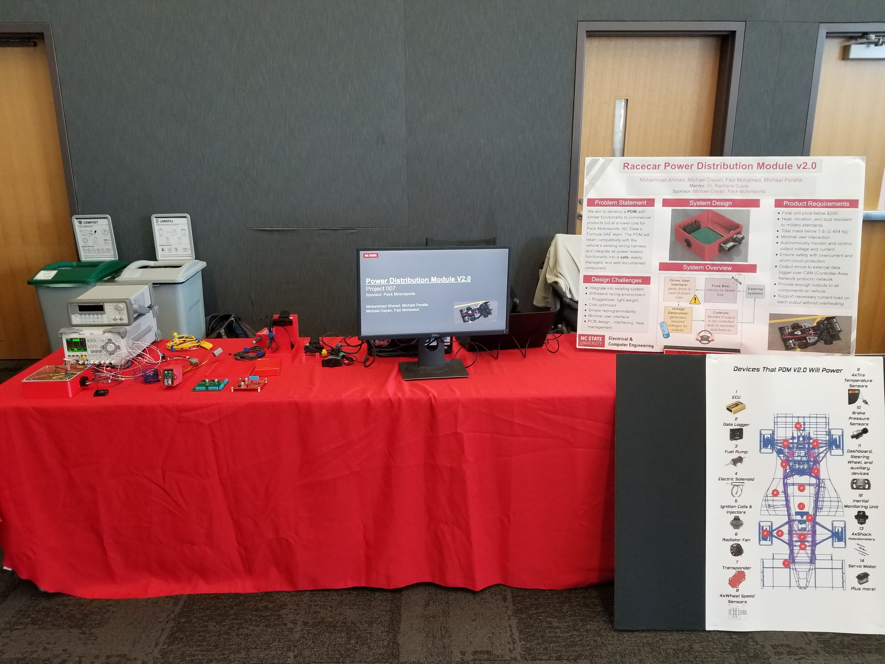
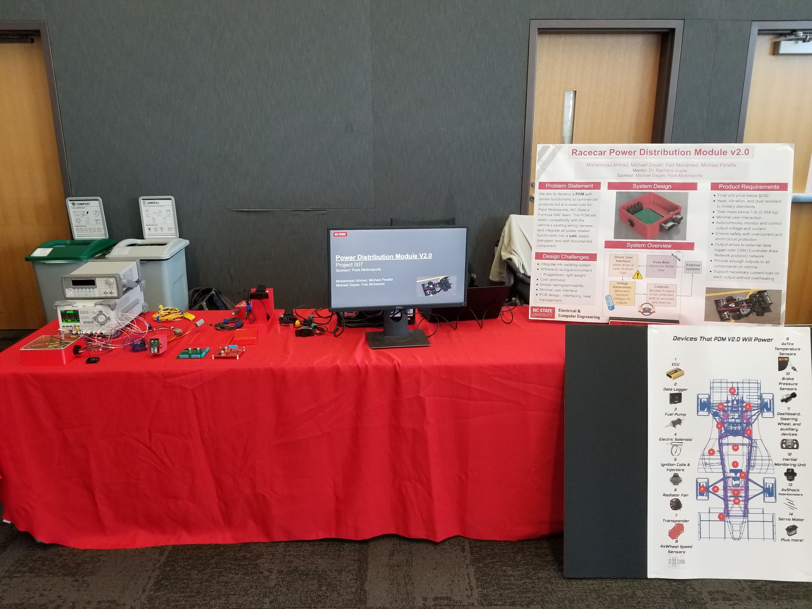

Graduation
B.S.E.E. From NCSU, December 10, 2021
I graduated from North Carolina State University with a Bachelor of Science in Electrical Engineering!
ECE Senior Design
1st Place for project and individual award for mechatronics, November 19th, 2021

 


This ECE senior design project is the cumlination of work beginning in the Spring 2021 semester; A Wolfpack Motorsports alumni Scott McDaniel arranged this project's approval with the ECE senior design teachers. I was the technical and organizational lead on the project; I was also the sponsoring member of the project representing Wolfpack Motorsports.
I had to wear many different hats on this project quite often at the same time. As a team member I was responsible for: all MCAD design and manufacturing, the smart high side switch circuit design+pcb layout+assembly, the relay circuit design, all wiring and connector pinning, heat testing, vibrational testing, and exporting all files for manufacturing.
The goal of this project was to create a low unit cost, roboust, configurable, and self monitoring power distribution module that incorporated as much solid state technology as possible; this is a major technological milestone for Pack Motorsports (formerly Wolfpack Motorsports). Michael Peralta designed the voltage regulation circuitry to output 3.3, 5, and 8V and performed extensive thermal testing of these.
Faiz Mohamed was responsible for the PCB layout and assembly of the indicator circuit as well as assisting Mohammad Ahmad with water testing. Ahmad was also responsible for implmenting the curiosity nano SAM51 board, CAN transciever, and all software.
I am so excited for the team to get to use Power Distribution Module V2.0 this competition season!
Siemens Award Nevada 2021
2nd Place Siemens Digital Twin Electrical System Excellence Award, June 19th, 2021


Siemens recognized the innovative use of their software VeSys by our team.
As the principal designer of the wiring harness design and the sole VeSys user of the team up to this point I created a wiring diagram that aided in planning and construction of the wiring harness for the 2021 car. A cash prize of $2000 was awarded to Wolfpack Motorsports.
Steering Wheel PCB
The Steering Wheel PCB for Wolfpack Motorsports is assembled and ready for installation, Dec 16th, 2020

The steering wheel PCB provides interconnection between many modules inside the steering wheel of the Wolfpack Motorsports race car including a touch screen.
The PCB is a two layer board with a design focusing on minizing assembled board height to fit inside the tight space in the steering wheel. Two of the components on the steering wheel PCB are a modified CAN to SPI shield and a raspberry pi zero w